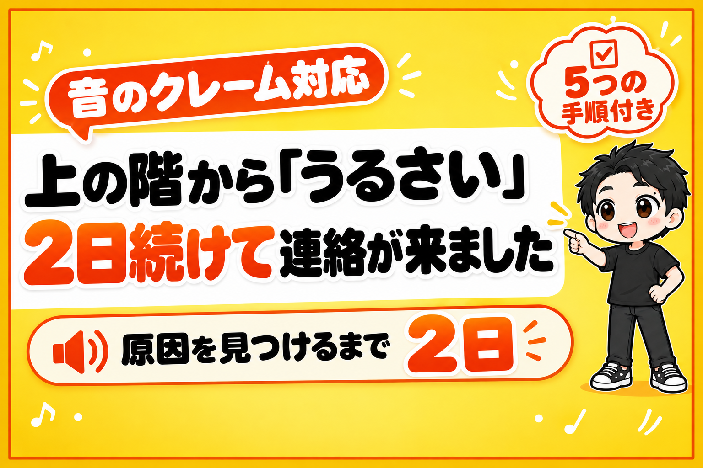

上の階から「うるさい」と、2日続けて連絡が来ました。
原因は2つでした。
バイオリンの音色と、床にじか置きされたスピーカーです。
どちらも、高い防音工事なしで手を打てました。
ただし、2つ目は1つ目を片づけた翌日に見つかりました。
1回の確認で安心しないほうがいい、というのが今回いちばんの学びです。
これからレンタルスペースでダンスや音楽の部屋を出す人に向けて、起きた順に全部書きます。
最後に、クレームが来たときにやる5つの手順をまとめています。
2年近く、問題なかった店です
都内の、鉄骨造のビルの1階にあるダンススタジオです。
上の階は、会社の事務所です。
入居するときに、上の階には確認をとっていました。
代表の方に「問題ない」と言ってもらってから借りています。
それから2年近く、苦情はありませんでした。
変わったのは、上の階のほうでした。
新しく採用された従業員の方が、音が気になる、とのことでした。
振動ではなく、音楽が聞こえる。
管理会社から、ぼくに連絡が入りました。
3人で、爆音を流して確かめた
まず、管理会社・上の階の方・ぼくの3人で、現地で確認しました。
スタジオで、思いきり大きな音で音楽を流します。
上の階で、どう聞こえるかを確かめてもらいました。
結果は「多少の音は聞こえるが」という状態。
管理会社も「これなら問題ないのでは」という感じでした。
ここで終わりにしたくなります。
でも、音の感じ方には個人差があります。
こちらが「大丈夫」と思っても、聞いている人がつらければ、それが答えです。
気になった日時で、予約とカメラを照合した
そこで、音が気になった具体的な日時を教えてもらいました。
その時間に入っていた予約と、店の防犯カメラの録画を確認します。
映っていたのは、バイオリンを弾いている利用者さんでした。
上の階の方も「この音色が聞こえる」と。
楽器の演奏が、原因の1つだったと思われます。
ぼくがやったことは3つです。
- 楽器の演奏・練習の利用を禁止にする
- すでに入っていた楽器の予約の方に、お断りのメールを送る
- その予約をキャンセルして、全額を返金する
対象は、2人・6件でした。
楽器の利用は、この店の利用時間の7%ほどです。
売上は少し減ります。
でも、店を続けられなくなるほうが、ずっと大きな損です。
予約サイトの「楽器演奏可」のチェックも、全部外しました。
換気扇は、効果より「誠意」のために
もう1つ、話に出たのが換気扇です。
「換気扇から音が出ているのでは?」
外に出て確かめると、音はあまり漏れていませんでした。
なので、効果や大事さは低めです。
それでも、屋外のカバーを付けるか、防音タイプの換気扇に替えるかを検討しています。
目的は、音を減らすことより、上の階の方に「ちゃんと動いている」と伝わることです。
カバーなら、数千円〜1万円くらいで付けられます。
クレームのあとは、技術の正しさだけでは関係が戻りません。
小さくても、目に見える対策を1つ出す。
これが効きます。
翌日、また「いまもうるさい」
ここで解決したと思っていました。
翌日、上の階の方から、ぼくに直接電話が来ました。
現地確認のときに、名刺を交換していたからです。
「いまも、うるさい」
すぐに防犯カメラを確認しました。
ダンスの練習で、5名が利用していました。
楽器ではありません。
よくよく見ると、Bluetoothスピーカーが床にじか置きされていました。
これでした。
スピーカーを床にじか置きすると、音が床に響きます。
床から建物の骨組みを伝って、上の階まで届きます。
同じ音量でも、置き方ひとつで聞こえ方が変わります。
ぼくがやったことは2つです。
- スピーカーをラックに固定して、床から離す(動かせないようにする)
- 音量に気をつけてもらうPOPを貼る
「床に置かないでください」とお願いするだけでは、守られないこともあります。
動かせないように固定してしまうのが確実です。
鉄骨造は、音と振動が伝わりやすい
今回いちばん身にしみたのは、建物の作りです。
鉄骨造は、鉄筋コンクリート造とくらべて、どうしても音や振動が伝わりやすいです。
コンクリートの厚みにもよります。
同じダンススタジオでも、建物によって気をつけ方がまったく変わります。
以前、下の階からのクレームで、月26万円の利益が出ていた店を閉めたことがあります。

あのときは、関係が戻らないまま撤退しました。
今回は、早めに原因を見つけて手を打てています。
ちがいは、日時を聞いて、予約とカメラで原因を確かめたことです。
防音工事をせずにダンススタジオを出す条件は、こちらにまとめています。

音のクレームが来たら、やる5つの手順
- 管理会社もいっしょに、3者で現地確認する(実際に大きな音を流す)
- 気になった日時を聞いて、予約と防犯カメラで照合する
- 原因の使い方を止める(禁止にする→お断りの連絡→キャンセルと返金)
- スピーカーを床から離して、動かせないように固定する
- POPを貼り、目に見える対策を1つ出す(換気扇のカバーなど)
ポイントは2番です。
「なんとなくうるさい」のままだと、何をしても終わりません。
日時が分かれば、原因が分かります。
原因が分かれば、手が打てます。
トラブル全般の対応は、こちらにまとめています。

まとめ
上の階からの音のクレーム。
原因は、バイオリンの音色と、床にじか置きのスピーカーでした。
1回の確認で「大丈夫」と思わない。
日時を聞いて、予約とカメラで確かめる。
置き方まで、見にいく。
いま、あなたの部屋のスピーカーは、床の上にありませんか?
ダンススタジオが向いている物件かどうか、30秒で分かる無料の診断を作りました。
診断のあとに、ぼくが物件を決めるときの順番を1日1通ずつ届けるメール講座(全8通)も受け取れます。

物件探しから、月いくら残るかの計算、出店、撤退まで。23店舗の数字といっしょに、教科書にぜんぶ書いています。
レンタルスペース経営の教科書

販売価格は3部売れるごとに2,000円ずつ値上がりします（上限あり）。内容・最新価格は販売ページをご確認ください。
▼もう1つの副業、AI社員だけのeBay輸出店の実録🐹

▼ブログ(レンスペ×eBay、全記事まとめ)